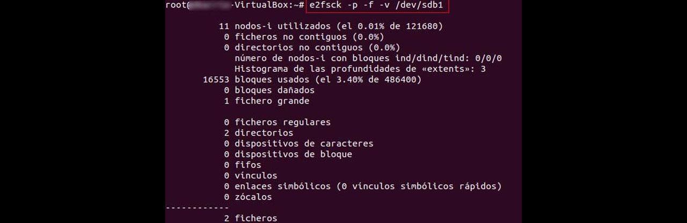

Reparar desde Windows 10
Método por la consola de comando del sistema CMD comandos para reparar nuestra unidad USB
Método por la consola de comando del sistema CMD comandos para reparar nuestra unidad USB
Método a través de la terminal de Linux comandos para reparar nuestra unidad USB
Método a través de programas para Windows uso más rápido, pero quizás no muy eficaz para nuestra unidad USB
diskpart
list disk
select disk X
attributes disk clear readonly
create partition primarylist partitionselect partition 1format fs=FAT32assign
chkdsk /f /r
HDPARM en Linux permite quitar el bit de protección de escritura. Se trata de un bit que podemos configurar para evitar que un USB sea reescrito con otros datos, y puede ser que en ocasiones el USB esté bloqueado porque dicho bit está activado.
sudo hdparm /dev/sdd
sudo hdparm -i /dev/sdd
sudo hdparm -r /dev/sdd
sudo hdparm -r0 /dev/sdd
GParted es un editor de particiones para el entorno de escritorio GNOME. Esta aplicación es usada para crear, eliminar, redimensionar, inspeccionar y copiar particiones, como también los sistemas de archivos que se encuentran en ellas.
fsck comprueba y repara sistemas de ficheros Linux, y no permite analizar ntfs, pero sí FAT. Para reparar NTFS ya tenemos ntfsfix.
fsck.fat -r -V /dev/sdb1
fsck.vfat -r -V /dev/sdb1
sudo fsck.ext4 -r -V /dev/sdb1
e2fsck es otra interesante utilidad de linux para examinar sistemas de ficheros Linux: ext2/ext3/ext4
e2fsck -p -f -v /dev/sdb1

Testdisk es una interesante utilidad de software para recuperación de datos (permite recuperar particiones perdidas y hacerlas bootables otra vez) que podemos encontrar en Linux, pero además en algún pack de Herramientas como Hiren´s Boot, Si utilizamos Hiren´s Boot, deberemos grabar una imagen ISO de la distribución en un USB, y arrancar con él desde el equipo,y también podemos utilizarlo directamente en cualquier distro Linux.
sudo apt-get install testdisk
yum install testdisk

Clear MBR partition table by writing zero bytes to it?

ntfsfix permite reparar errores en el formato de ficheros tipo ntfs.
apt-get install ntfs-3g
ntfsfix /dev/sdb1
ntfsfix -d -b /deb/sdb1
mount -t ntfs-3g /dev/sdb /mnt/
dosfsck chequea y repara sistemas de ficheros de dos. osfsck no funciona con ntfs, solo con FAT.
sudo apt-get install dosfstools
sudo dosfsck -t -a -w /dev/sdb1
dd es una de las navajas suizas de Linux, y es que dd significa “data duplicator” (duplicador de datos), aunque en broma también se le conoce como “destructor de datos“, ya que es una herramienta muy poderosa. A este último nombre haremos honor, utilizándolo para formatear el disco, llenándolo de “zeros” (machacando toda la información, borrando el disco).
dd if=entrada_de_datos of=salida_de_datos
dd if=/dev/zero of=/dev/sdb
Realizamos un formateo a bajo nivel con la herramienta HDD Low Level Format Tool.
| Archivos | Servidores | ||
|---|---|---|---|
| HDD Low Level Format Tool | Mega | WEB Oficial | |
USB Write Protector es una herramienta que permite desactivar la protección contra escritura de todos los dispositivos USB conectados al equipo. PASOS A REALIZAR PARA UTILIZAR USB WRITE PROTECTOR:
| Archivos | Servidores | |
|---|---|---|
| USB WRITE PROTECTOR | Mega | |